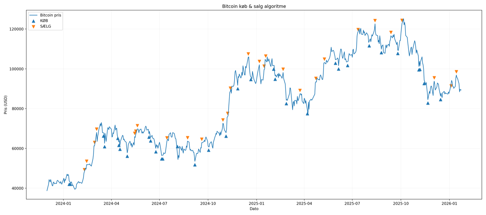
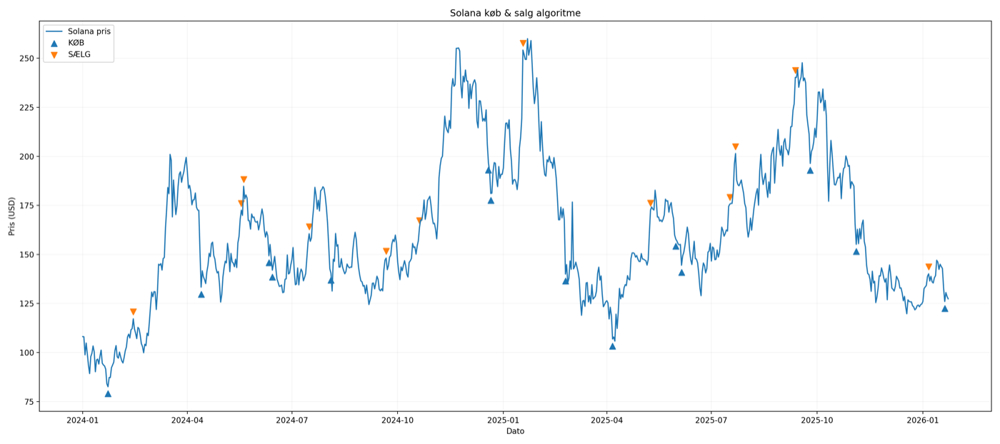

<!doctype html>
<html lang="da" data-theme="dark">
  <head>
    <meta charset="UTF-8" />
    <meta name="viewport" content="width=device-width, initial-scale=1.0" />
    <meta name="color-scheme" content="dark" />
    <meta
      name="description"
      content="Crypto Club Market Intelligence — heatmaps, scanner og algoritmesignaler."
    />
    <link rel="icon" href="assets/favicon-32x32.png" />
    <link rel="stylesheet" href="assets/app.css" />
    <link rel="stylesheet" href="assets/intelligence.css" />
    <title>Crypto Club — Market Intelligence</title>
  </head>
  <body data-page="intelligence">
    <div class="app" id="app-shell"></div>
    <script src="assets/mock-data.js?v=20260713"></script>
    <script src="assets/app.js?v=20260713"></script>
    <script>
      const UI = CryptoClubUI;
      UI.mountShell();
      UI.bindShell();

      const icons = {
        heatmap: `<svg viewBox="0 0 24 24"><path d="M4 4h6v6H4zM14 4h6v6h-6zM4 14h6v6H4zM14 14h6v6h-6z"/></svg>`,
        scanner: `<svg viewBox="0 0 24 24"><circle cx="11" cy="11" r="6"/><path d="m16 16 4 4M11 7v8M7 11h8"/></svg>`,
        algo: `<svg viewBox="0 0 24 24"><path d="M4 18V9m5 9V5m5 13v-6m5 6V3"/><path d="m4 6 5-3 5 5 5-5"/></svg>`,
        insight: `<svg viewBox="0 0 24 24"><path d="M9 18h6M10 22h4"/><path d="M8.5 15.5a7 7 0 1 1 7 0c-.8.6-1.5 1.2-1.5 2.5h-4c0-1.3-.7-1.9-1.5-2.5Z"/></svg>`,
      };

      const heatmaps = [
        {
          id: "btc",
          asset: "Bitcoin",
          symbol: "BTC",
          price: "$64.129",
          score: 51,
          status: "Neutral",
          updated: "10. jul.",
          image: "assets/images/heatmap-bitcoin.png",
          tone: "btc",
          analysis:
            "Bitcoin ligger tæt på skalaens midtpunkt. Det peger på stabilisering efter prisfaldet, uden et entydigt køb- eller salgspres.",
        },
        {
          id: "eth",
          asset: "Ethereum",
          symbol: "ETH",
          price: "$1.795",
          score: 53,
          status: "Neutral",
          updated: "10. jul.",
          image: "assets/images/heatmap-ethereum.png",
          tone: "eth",
          analysis:
            "Ethereum viser en afventende fase omkring midterpunktet. Sentimentet er stabilt, men giver endnu ikke bekræftelse på et trendskifte.",
        },
        {
          id: "sol",
          asset: "Solana",
          symbol: "SOL",
          price: "$78,07",
          score: 53,
          status: "Neutral",
          updated: "10. jul.",
          image: "assets/images/heatmap-solana.png",
          tone: "sol",
          analysis:
            "Solana stabiliserer efter en markant korrektion. Den neutrale score understøtter en afventende position frem for aggressiv eksponering.",
        },
        {
          id: "nasdaq",
          asset: "Nasdaq 100",
          symbol: "NDX",
          price: "$709,43",
          score: 45,
          status: "Neutral",
          updated: "7. jul.",
          image: "assets/images/heatmap-nasdaq-100.png",
          tone: "ndx",
          analysis:
            "Prisen ligger nær historiske topniveauer, mens sentimentet er mere afdæmpet. Divergensen øger behovet for risikokontrol.",
        },
        {
          id: "sp500",
          asset: "S&P 500",
          symbol: "SPX",
          price: "$747,71",
          score: 45,
          status: "Neutral",
          updated: "7. jul.",
          image: "assets/images/heatmap-sp500.png",
          tone: "spx",
          analysis:
            "S&P 500 viser samme divergens som Nasdaq: høj pris, men neutral conviction. Det kan varsle konsolidering eller øget volatilitet.",
        },
      ];

      const heatmapCard = (
        item,
      ) => `<details class="heatmap-card" id="${item.id}" ${item.id === "btc" ? "open" : ""}>
        <summary><span class="asset-orb ${item.tone}">${item.symbol.slice(0, 1)}</span><span><small>${item.symbol}</small><strong>${item.asset}</strong><em>${item.price}</em></span><span class="heat-score"><strong>${item.score}</strong><small>/100</small><i style="--score:${item.score}%"></i></span><span class="status neutral">${item.status}</span><span class="summary-arrow">⌄</span></summary>
        <div class="heatmap-detail"><div><p class="eyebrow">AI-vurdering · opdateret ${item.updated}</p><h3>${item.asset} er i neutral zone</h3><p>${item.analysis}</p><div class="score-scale"><span><i style="left:${item.score}%"></i></span><small>Frygt</small><small>Neutral</small><small>Grådighed</small></div><div class="detail-actions"><a class="btn btn-ghost" href="https://app.cryptoclub.dk" target="_blank" rel="noopener">Spørg AI Matthæus</a><button class="btn btn-ghost" type="button" data-demo="Historiske heatmap-data åbnes i den færdige app">Se historik</button></div></div><button class="chart-preview" type="button" data-chart-src="${item.image}" data-chart-title="${item.asset} Heatmap"><span>Åbn graf</span></button></div>
      </details>`;

      document.getElementById("page-content").innerHTML = `
        <header class="intel-head"><div><p class="eyebrow">Crypto Club Labs</p><h1>Market Intelligence</h1><p>Tre datakilder. Ét struktureret beslutningsgrundlag.</p></div><div class="intel-updated"><i></i><span>Senest opdateret</span><strong>11. juli · 12:12</strong></div><button class="icon-btn mobile-menu" id="intelMobileMenu" type="button" aria-label="Åbn navigation">${UI.icons.menu}</button></header>

        <section class="daily-brief"><span class="brief-icon">${icons.insight}</span><div><p class="eyebrow">Dagens briefing</p><h2>BTC holder ankerrollen. Markedet er neutralt, og bredden er fortsat smal.</h2><p>Heatmaps viser ingen ekstrem sentimentzone. Scanneren godkender UNI og AAVE til kontrolleret observation, mens det seneste BTC-algoritmesignal er et let salgssignal.</p></div><div class="brief-facts"><span><small>Regime</small><strong>Risk On</strong></span><span><small>Godkendte alts</small><strong>2 / 14</strong></span><span><small>Aktivt signal</small><strong class="negative">Let salg</strong></span></div></section>

        <nav class="intel-tabs" aria-label="Market Intelligence områder"><button class="is-active" data-intel-tab="overview">Overblik</button><button data-intel-tab="heatmaps">Heatmaps <span>5</span></button><button data-intel-tab="scanner">AI Market Scanner</button><button data-intel-tab="algo">Algo Signals <span>1</span></button></nav>

        <section data-intel-panel="overview" class="intel-overview">
          <div class="tool-grid">
            <button class="tool-card" type="button" data-open-tab="heatmaps"><span class="tool-icon heat">${icons.heatmap}</span><span><small>5 markeder</small><strong>Heatmaps</strong><em>Sentiment og historisk kontekst</em></span><span class="tool-state"><b>51</b><small>BTC · Neutral</small></span>${UI.icons.arrow}</button>
            <button class="tool-card" type="button" data-open-tab="scanner"><span class="tool-icon scan">${icons.scanner}</span><span><small>Daglig top-14</small><strong>AI Market Scanner</strong><em>Momentum, score og relativ styrke</em></span><span class="tool-state"><b>2</b><small>Godkendte</small></span>${UI.icons.arrow}</button>
            <button class="tool-card" type="button" data-open-tab="algo"><span class="tool-icon algo">${icons.algo}</span><span><small>BTC &amp; SOL</small><strong>Algo Signals</strong><em>Køb/salg og valideret backtest</em></span><span class="tool-state negative"><b>SÆLG</b><small>BTC · 30%</small></span>${UI.icons.arrow}</button>
          </div>
          <div class="overview-grid"><article class="intel-panel"><div class="intel-panel-head"><div><p class="eyebrow">Beslutningsplan</p><h2>Det vigtigste nu</h2></div><span class="status neutral">Moderat risiko</span></div><ol class="action-list"><li><span>01</span><div><strong>Bevar BTC som anker</strong><p>Minimum 60% i modelallokeringen, mens markedsbredden er begrænset.</p></div></li><li><span>02</span><div><strong>Overvåg UNI og AAVE</strong><p>Begge godkendes af scanneren, men eksponering skal holdes under faste caps.</p></div></li><li><span>03</span><div><strong>Afvent ETH og SOL</strong><p>Neutrale heatmaps er ikke i sig selv en gen-godkendelse.</p></div></li></ol></article><article class="intel-panel"><div class="intel-panel-head"><div><p class="eyebrow">Seneste events</p><h2>Datastrøm</h2></div></div><div class="event-feed"><div><i class="red"></i><span><strong>BTC/USD · SÆLG</strong><small>Algo signal · styrke 30%</small></span><time>08. jul.</time></div><div><i></i><span><strong>5 heatmaps opdateret</strong><small>BTC, ETH, SOL, Nasdaq, S&P 500</small></span><time>10. jul.</time></div><div><i class="green"></i><span><strong>UNI og AAVE godkendt</strong><small>AI Market Scanner</small></span><time>I dag</time></div></div></article></div>
        </section>

        <section data-intel-panel="heatmaps" hidden><div class="section-intro"><div><p class="eyebrow">Sentiment</p><h2>Heatmaps</h2><p>Fold kun den graf ud, du vil undersøge. Score, pris og AI-vurdering kan aflæses uden at åbne alle fem billeder.</p></div><span class="data-disclaimer">Data er vejledende · ikke finansiel rådgivning</span></div><div class="heatmap-list">${heatmaps.map(heatmapCard).join("")}</div></section>

        <section data-intel-panel="scanner" hidden><div class="section-intro"><div><p class="eyebrow">Daglig scanning</p><h2>AI Market Scanner</h2><p>14 aktiver er reduceret til kerne, godkendte muligheder og observationer.</p></div><span class="data-disclaimer">Modelkørsel · 11. juli 12:12</span></div>
          <div class="scanner-core"><div><span class="rank gold">1</span><div><small>Kerne</small><h3>Bitcoin <em>BTC</em></h3></div></div><div><small>Pris</small><strong>$64.115,91</strong></div><div><small>Market cap</small><strong>$1.285B</strong></div><div><small>AI-vurdering</small><strong>Markedsanker</strong></div><span class="status approved">Godkendt</span></div>
          <div class="approved-grid"><article><div class="asset-orb uni">U</div><div><small>Casino · #1</small><h3>Uniswap <em>UNI</em></h3></div><strong class="scanner-score">8,20</strong><dl><div><dt>7 dage</dt><dd class="positive">+9,82%</dd></div><div><dt>vs. BTC</dt><dd class="positive">+7,41%</dd></div><div><dt>30 dage</dt><dd class="positive">+47,08%</dd></div></dl><p>Stærkt momentum og relativ styrke. Kontrolleret eksponering under cap.</p><button class="btn btn-ghost" data-demo="UNI-analysen åbnes i den færdige app">Åbn analyse</button></article><article><div class="asset-orb aave">A</div><div><small>Casino · #2</small><h3>Aave <em>AAVE</em></h3></div><strong class="scanner-score">8,22</strong><dl><div><dt>7 dage</dt><dd class="positive">+9,34%</dd></div><div><dt>vs. BTC</dt><dd class="positive">+6,71%</dd></div><div><dt>30 dage</dt><dd class="positive">+56,27%</dd></div></dl><p>Godkendt momentum, men 14-dages relativ styrke kræver fortsat observation.</p><button class="btn btn-ghost" data-demo="AAVE-analysen åbnes i den færdige app">Åbn analyse</button></article></div>
          <details class="scanner-watch"><summary><span><strong>Observationer</strong><small>12 aktiver kræver yderligere bekræftelse</small></span><span>Vis liste</span></summary><div class="watch-table"><div class="watch-head"><span>Aktiv</span><span>Score</span><span>7d</span><span>Vurdering</span></div>${[
            ["JST", "Just", "7,17", "+13,17%"],
            ["ZEC", "Zcash", "7,17", "+8,29%"],
            ["ARB", "Arbitrum", "7,39", "+14,81%"],
            ["ADA", "Cardano", "7,08", "—"],
            ["MORPHO", "Morpho", "5,28", "+10,83%"],
            ["STX", "Stacks", "5,33", "—"],
          ]
            .map(
              (item) =>
                `<div><span><b>${item[0]}</b><small>${item[1]}</small></span><span>${item[2]}</span><span class="positive">${item[3]}</span><span class="status wait">Afvent</span></div>`,
            )
            .join("")}</div></details>
          <div class="scanner-summary"><article><p class="eyebrow">Konklusion</p><h3>Smal markedsbredde</h3><p>BTC dominerer, mens kun to alts opnår godkendelse. Automatiseret filtrering reducerer støj, men mangelfulde datapunkter kræver manuel kontrol.</p></article><article><p class="eyebrow">Modelallokering</p><div class="allocation-line"><i style="width:60%"></i><i style="width:10%"></i><i style="width:10%"></i><i style="width:20%"></i></div><div class="allocation-labels"><span>BTC 60%</span><span>UNI 10%</span><span>AAVE 10%</span><span>Cash 20%</span></div></article></div>
        </section>

        <section data-intel-panel="algo" hidden><div class="section-intro"><div><p class="eyebrow">Systematiske signaler</p><h2>Algo Signals</h2><p>Aktive signaler står først. Historisk performance og grafer ligger i fold-ud rapporter.</p></div><span class="data-disclaimer">Seneste signal · 8. juli 02:00</span></div>
          <article class="active-signal"><span class="signal-light"></span><div><small>Aktivt handelssignal</small><h3>BTC / USD</h3></div><div><small>Signal</small><strong class="negative">SÆLG</strong></div><div><small>Styrke</small><strong>30% · Let</strong></div><div><small>Pris</small><strong>$64.042</strong></div><div><small>Historisk win rate</small><strong>73%</strong></div><button class="btn btn-ghost" data-demo="Signalhistorikken åbnes i den færdige app">Se signalhistorik</button></article>
          <div class="backtest-grid"><details open><summary><span><small>Backtest rapport</small><strong>Bitcoin</strong></span><span class="outperformance">+69,87%<small>outperformance</small></span><span>⌄</span></summary><div class="backtest-body"><div class="backtest-stats"><span><small>Signalafkast</small><strong>+108,07%</strong></span><span><small>Buy & Hold</small><strong>+38,20%</strong></span><span><small>Win rate</small><strong>65,81%</strong></span><span><small>Signaler</small><strong>160</strong></span><span><small>Kapital beskyttet</small><strong>+30,84%</strong></span></div><button class="chart-preview" data-chart-src="assets/images/algo-bitcoin.png" data-chart-title="Bitcoin algoritme-backtest"><span>Åbn graf</span></button></div></details><details><summary><span><small>Backtest rapport</small><strong>Solana</strong></span><span class="outperformance">+92,28%<small>outperformance</small></span><span>⌄</span></summary><div class="backtest-body"><div class="backtest-stats"><span><small>Signalafkast</small><strong>+74,70%</strong></span><span><small>Buy & Hold</small><strong>−17,58%</strong></span><span><small>Win rate</small><strong>80,77%</strong></span><span><small>Signaler</small><strong>53</strong></span><span><small>Kapital beskyttet</small><strong>+43,78%</strong></span></div><button class="chart-preview" data-chart-src="assets/images/algo-solana.png" data-chart-title="Solana algoritme-backtest"><span>Åbn graf</span></button></div></details></div>
        </section>

        <dialog class="chart-dialog" id="chartDialog"><header><div><p class="eyebrow">Datavisning</p><strong id="chartDialogTitle">Graf</strong></div><button class="chat-icon-btn" id="closeChart" type="button" aria-label="Luk graf">✕</button></header></dialog>`;

      function openIntelTab(id) {
        document
          .querySelectorAll("[data-intel-tab]")
          .forEach((button) =>
            button.classList.toggle(
              "is-active",
              button.dataset.intelTab === id,
            ),
          );
        document
          .querySelectorAll("[data-intel-panel]")
          .forEach((panel) => (panel.hidden = panel.dataset.intelPanel !== id));
        history.replaceState(null, "", `#${id}`);
        window.scrollTo({ top: 0, behavior: "auto" });
      }
      document
        .querySelectorAll("[data-intel-tab]")
        .forEach((button) =>
          button.addEventListener("click", () =>
            openIntelTab(button.dataset.intelTab),
          ),
        );
      document
        .querySelectorAll("[data-open-tab]")
        .forEach((button) =>
          button.addEventListener("click", () =>
            openIntelTab(button.dataset.openTab),
          ),
        );
      document.querySelectorAll("[data-chart-src]").forEach((button) =>
        button.addEventListener("click", () => {
          document.getElementById("chartDialogTitle").textContent =
            button.dataset.chartTitle;
          const image = document.getElementById("chartDialogImage");
          image.src = button.dataset.chartSrc;
          image.alt = button.dataset.chartTitle;
          document.getElementById("chartDialog").showModal();
        }),
      );
      document
        .getElementById("closeChart")
        ?.addEventListener("click", () =>
          document.getElementById("chartDialog").close(),
        );
      document
        .getElementById("chartDialog")
        ?.addEventListener("click", (event) => {
          if (event.target === event.currentTarget) event.currentTarget.close();
        });
      document
        .getElementById("intelMobileMenu")
        ?.addEventListener("click", () =>
          document.querySelector(".sidebar")?.classList.toggle("is-open"),
        );
      UI.bindDemoActions(document.getElementById("page-content"));
      const initialTab = location.hash.replace("#", "");
      if (["overview", "heatmaps", "scanner", "algo"].includes(initialTab))
        openIntelTab(initialTab);
    </script>
  </body>
</html>
